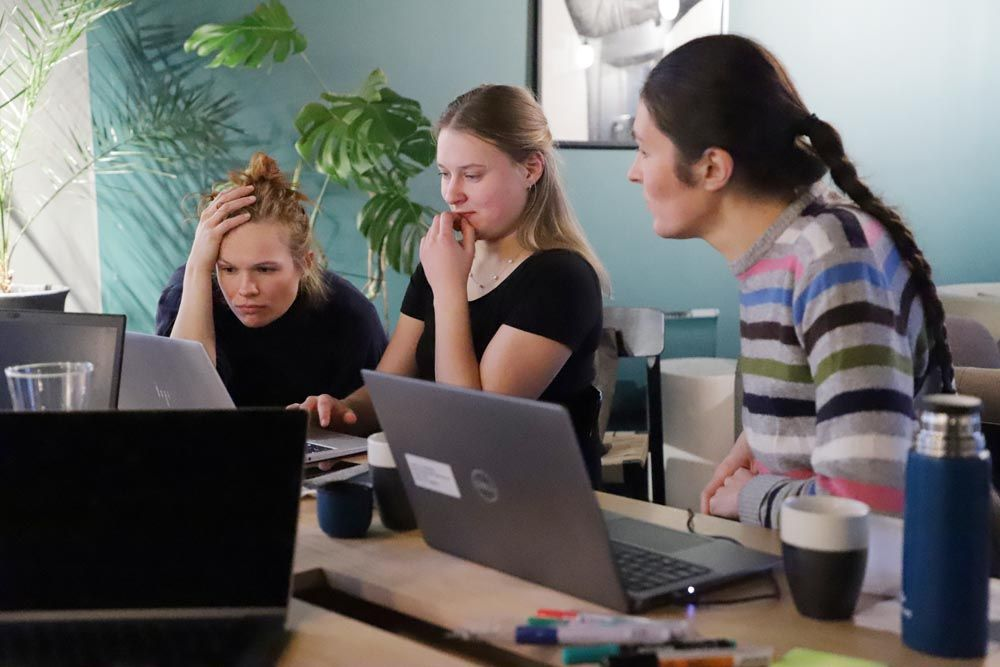

The DeepWind Hackathon happened! It was just as awesome as I thought it would be, with the usual mix of diverse expertise and insight from across Europe and the Americas. I hope it’s the first of many wind-related events, stay tuned!
I’m new to the wind community, so there was not a lot of chance to feel out projects ahead of this event. So after saying Hello and finding coffee, we began with an hour or so of project pitches, followed by half-an-hour of negotiation and clarification. This simple process is usually enough to land on teams and projects, and this time was no exception. Read about the projects, and the hackers behind them, below.
If you’re into computational approaches to modeling and optimizing wind energy, you are welcome to join the DeepWind Slack we set up for the event. Follow this link.
As always in these events, it was impressive to see small groups of enthusiastic strangers come together and magic something out of nothing in less than two days, fuelled only by coffee, tea, and the occasional chocolate brownie.
Unicorn hackers — A digital twin project
Rudy Yuksel (UMaine), Diederik van Binsbergen (NTNU/VUB), Giovanni Aiosa do Amaral (University of São Paulo), Florian Stadtmann (NTNU), Hallgrim Ludvigsen (Enerbits), Olav Kihle (NTNU), Daniel Yang Hansen (NTNU).
With the goal of building a farm-scale digital twin, the team attempted to integrate several datasets and models, and succeeded in building a strong foundation on which to continue iterating. Their system starts with stochastically sampling wind speed and direction from historical data. This feeds a wake model for the wind farm, modeled using FAST.Farm https://github.com/OpenFAST/openfast/tree/main. The result in turn informs an original damage-accumulation fatigue model of the main bearings, in order to predict maintenance needs for each turbine. Finally, a marine safety model searches for an optimal maintenance schedule, using historical wave and weather data. The team also looked at strategies for delaying maintenance by changing operating parameters, for example to reduce the chance of failure during winter.
The team made impressive progress on an ambitious goal, implementing an original method for modeling the bearings fatigue with rotational and actual load.
Energy game project - Design
Fabian Anstock (HAW Hamburg), Ajit Pillai (University of Exeter), Maria Emilia (Mila) Teixeira De Oliveira (Equinor), Olga Usachova (NTNU), Ivana Lapsanka (BAM), Daria Cislo (University of Edinburgh).
This was one of two projects focused on creating “the best game of all time” — an educational energy strategy game that Morten Fredriksen had proposed as an outreach aid. The team quickly adopted the energy trilemma, which captures the tension between the equity, sustainability and security of energy sources, as their framework for the design of this game.
Accordingly, most of the work by this team was analog, collecting open data on average price-per-kWh (reflecting equity), average emissions penalty (sustainability), and the relative reliability and responsiveness (security) of various energy sources relevant to the Norwegian grid: coal, oil, gas, nuclear, hydro, solar, and of course offshore and onshore wind. Scaling the axes of the trilemma to the 0–10 range and multiplying them would provide the final score for a player’s strategy.

Energy game project - MVP
Morten Fredriksen, Lars Petter Hauge, Fredrik Mellemstrand, Robert Dibble (all Equinor), Roman Sukhanov (independent).
The energy strategy game was more than just clever game design — a second team implemented a prototype game. The player is challenged with meeting the energy demand of Norway for the first week in January 2024. Adding a baseload of nuclear energy is a good start, but nuclear reactors have historically not been very responsive to high-frequency load changes. Wind and solar can provide substantial energy, and at variable but uncontrollable output levels. Gas is cheap and can follow load perfectly, but has a high carbon penalty… and so on.
There was no shortage of feature requests and ideas, the future of this idea is only limited by developer time! And, while there are already sustainable energy games on the web and on Steam (here’s one from ENEL), the down-to-earth realism and real-time data possibilities of this game captured people’s imaginations. Maybe someone should fund this one :)
Thank you
As always, some thanks are due:
- Many thanks to the EERA DeepWind Conference, and especailly John Olav Tande and Daniel Albert at SINTEF for the collaboration.
- The DIGS venue is such a great event space, and Ragnhild Førde looked after us beautifully. Coworking spaces are the best ⭐
- A big thank you to my employer, Equinor, and especially to Lars Petter Hauge, Fredrik Mellemstrand, Mats Andersen and Markus Dregi for extra help figuring out the logistics.